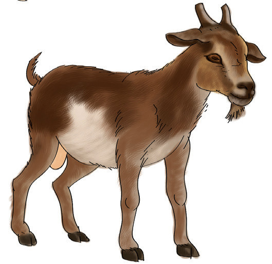
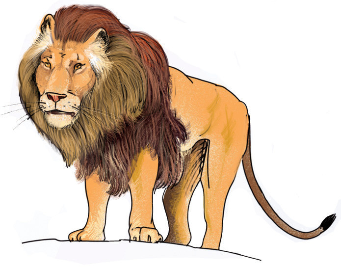

4.
Soma silabi na maneno haya.
mbimbambombumbembiombaoumbaumboimba
5.
Soma maneno yafuatayo kwa haraka.
mbuzimbugambegumbunimbonabombasembesimbashambakambapambapembepumbatumbotembo
6.
Tunga sentensi kwa kutumia maneno haya
mbiombegumbuzimbogaimbaombasimbatumbo
MfanoSara anapenda kula mboga za majani.
mbio
mbegu
mbuzi
mboga
imba
omba
simba
tumbo
7.
Soma sentensi hizi.
Tembo ana pembe ndefu.Mbuzi amekata kamba.Simba anaishi mbugani.Shingo ya mbuni ni ndefu.
8.
Tunga sentensi kwa kutumia majina ya picha hizi.

mbuzi
simbambuzi
simba